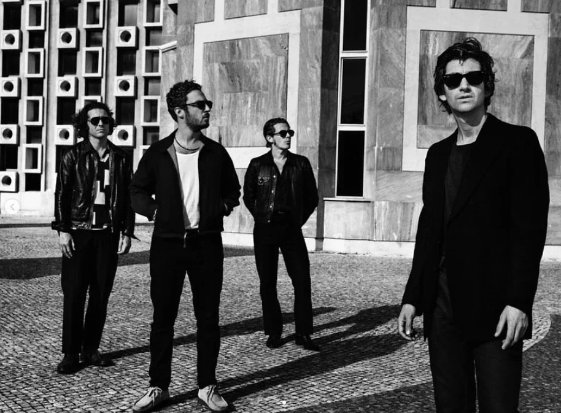
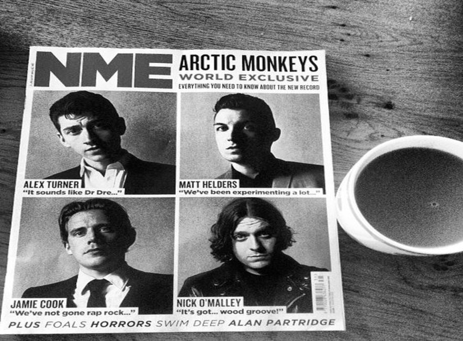
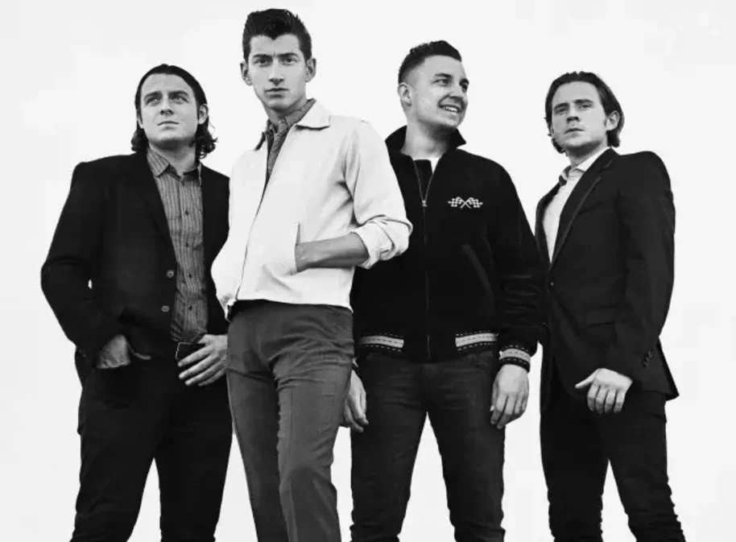

Cancó mes famosa


La proposta musical del grup Arctic Monkeys arriba amb nous sons
i unes fotografies amb estil cinematogràfic,
amb la portada de l'àlbum presa pel seu bateria, Matt Helders.

Arctic Monkeys ha llançat sorprenentment el senzill "Revolutionary Wave",
emocionant els seus seguidors. Coneguts per la seva fusió de rock alternatiu,
la banda ha estat envoltada de rumors sobre nova música.

Arctic Monkeys sorprèn amb "Aurora", un senzill que combina
rock alternatiu amb lletres introspectives, marcant un nou èxit per a la banda.
Informació sobre el grup
Components del grup:
- Alex Turner
- Jamie Cook
- Nick O'Malley
- Matt Helders
Instruments:
- Guitarra i veu
- Guitarra
- Baix
- Bateria i percussió
| Any | Álbum | Número de cancions |
|---|---|---|
| 2006 | Whatever People Say I Am, That's What I'm Not | 13 |
| 2007 | Favourite Worst Nightmare | 12 |
| 2009 | Humbug | 10 |
| 2011 | Suck It and See | 12 |
| 2013 | AM | 12 |
| 2018 | Tranquility Base Hotel & Casino | 11 |
| 2022 | The Car | 10 |